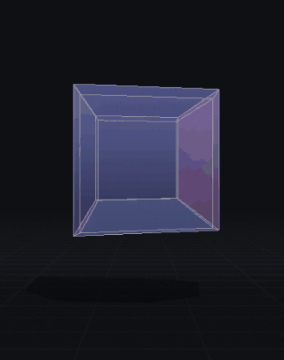

quarta persona
Non puoi vedere la quarta dimensione. Puoi riconoscerla.

Nessun occhiale, nessuna app, nessun permesso. Si apre da un link sul telefono, funziona offline, ed è gratuito e open source.
In una riga
Un gioco nel browser in cui abiti uno spazio a quattro dimensioni, e che ti accompagna dalla prospettiva del disegno fino alla quarta dimensione parlandoti in lingua semplice, un gradino alla volta.
Cosa lo distingue
- Ti insegna. Sette capitoli narrati, ognuno chiuso da un'azione che compi tu. Nessun capitolo avanza da solo.
- Profondità senza occhiali. Prospettiva accoppiata alla testa — frustum asimmetrico fuori asse, non una camera che ruota — più oscillazione autonoma quando il telefono è fermo.
- Le celle sono di vetro, con la rifrazione che varia con la distanza nella quarta direzione. I fili sono ambigui, il solido nasconde: il vetro fa vedere tutte e otto le celle senza ribaltare la profondità.
- L'ombra dell'ombra. L'oggetto proiettato in tre dimensioni sta nella stanza e proietta a sua volta un'ombra sul pavimento.
- Si sente. Un bordone la cui altezza segue la tua posizione in
w.
Per chi vuole la sostanza
La matematica è nel repository, isolata dal rendering e verificata dai test:
momento angolare a sei componenti, rotazioni doppie e isocline, caduta
1/r³ con orbite che non stanno in piedi (Ehrenfest, 1917), nodi che si
sciolgono, chiralità che si ribalta solo passando per un piano che contiene
w, e i sei politopi regolari generati da codice.
| Piattaforma | browser, mobile-first (Chrome su Android, Safari su iOS), PWA installabile |
|---|---|
| Prezzo | gratuito |
| Licenza | codice MIT, contenuti CC BY 4.0 |
| Telemetria | nessuna |
| Lingue | italiano, inglese (aggiungerne una costa un file solo) |
| Repository | github.com/dade1987/fourth-person |
Cosa non fa
Non è un visualizzatore di tesseratti, non ha multiplayer, classifiche né account, non usa la fotocamera, e non contiene la 120-cella. L'elenco completo di ciò che sta fuori è nella specifica pubblica, §11.
{kind=link}
{kind=link}